Archive
Earlier work
Older technical art, environments, and props, from before most of my current rendering and engine work. Click a section to open it.
Unreal Engine 4 & Houdini technical art
13 videos
Tools, materials, and visual effects, mostly in UE4.

Modular road tool
A level design tool that places modular road pieces along a path, conforms them to the terrain, and adds variation. Debug views flag problem areas.

Portals
Two linked portals that render each other's view in real time. Players keep their rotation and velocity when they pass through.

Gravity well
Material and particle effects that bend space, plus game logic that slows time inside the volume.

Post-process material showcase
A custom post-process material across several environments, with Blueprints driving the effects and the animal characters.

Post-process breakdown
A walkthrough of how the post-process material is built.

Disintegration, final
Curtains that burn away. A Blueprint drives the dissolve while fire climbs the fabric and ash piles up below. The burn pattern and speed are randomized.

Disintegration, v2
An earlier version, with fire particles following the dissolve.

Disintegration material
The base material, with the dissolve controlled from outside.

Dynamic color material
A Blueprint changes the color over time, and an edge-detection pass makes objects look like they materialize when they spawn.

Fractal material 01
A fractal material whose shape and color change over time.

Fractal material 02
A second fractal variation.

Infinite loop material
A material that loops without a visible seam.

Sand monster (Houdini)
An animated character drives a sand simulation until the creature collapses. Rendered in Mantra.
Environments
2 scenes
Two scenes built entirely from my own models and materials.
Oasis of Shattered Dreams
A modular environment.
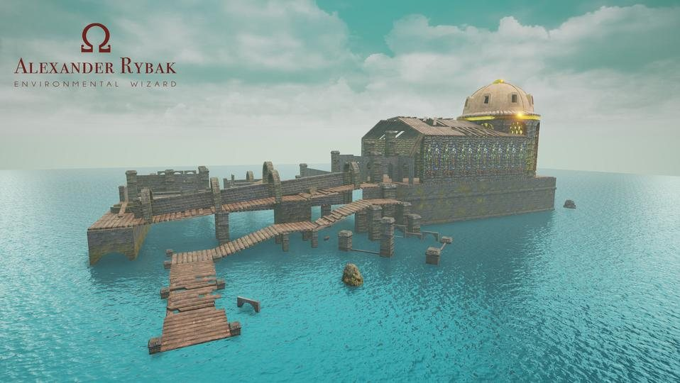
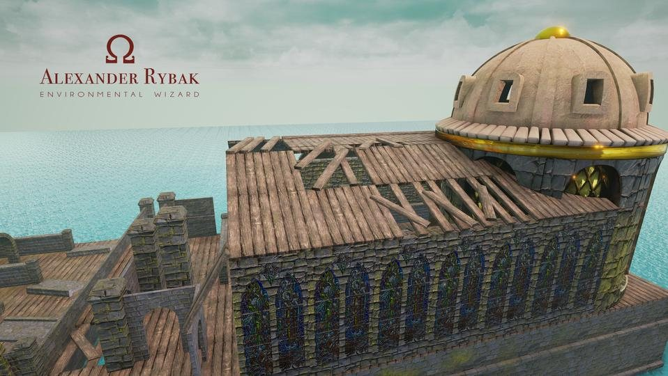
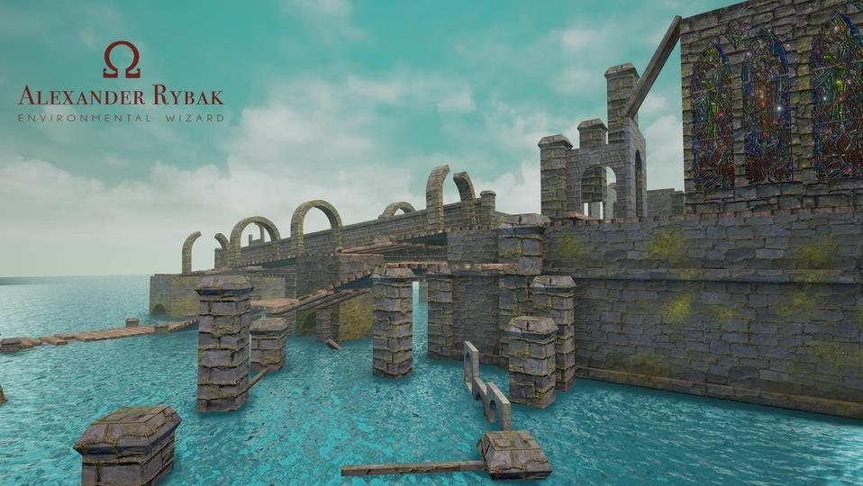
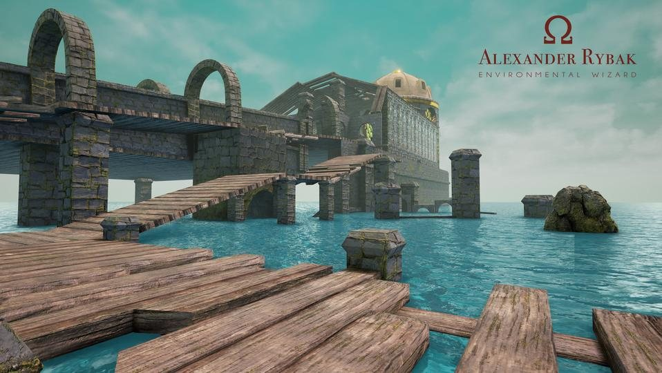
Ancient Temple
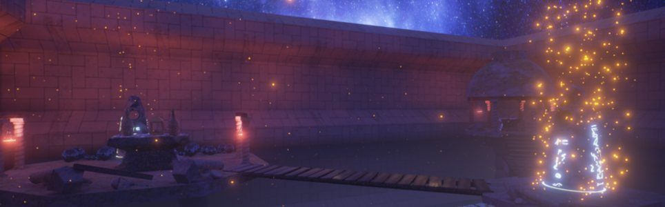
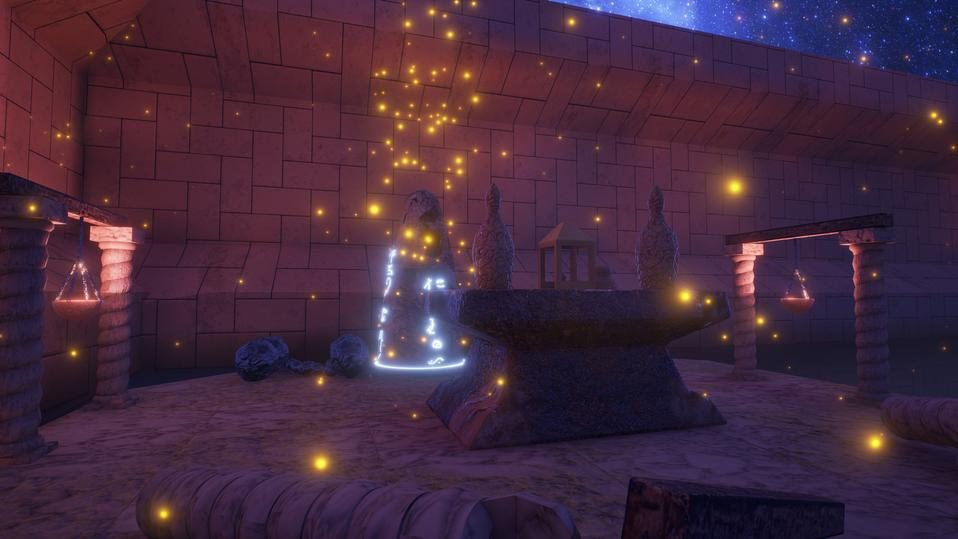
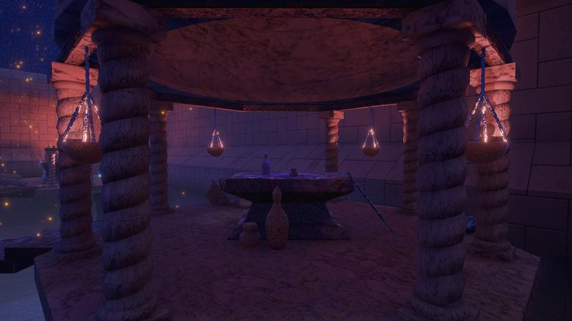
Props
6 images
Modeled and textured props based on real objects.
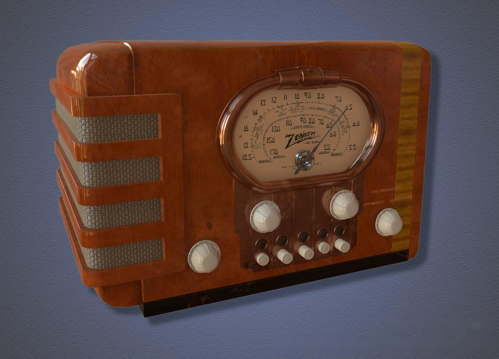
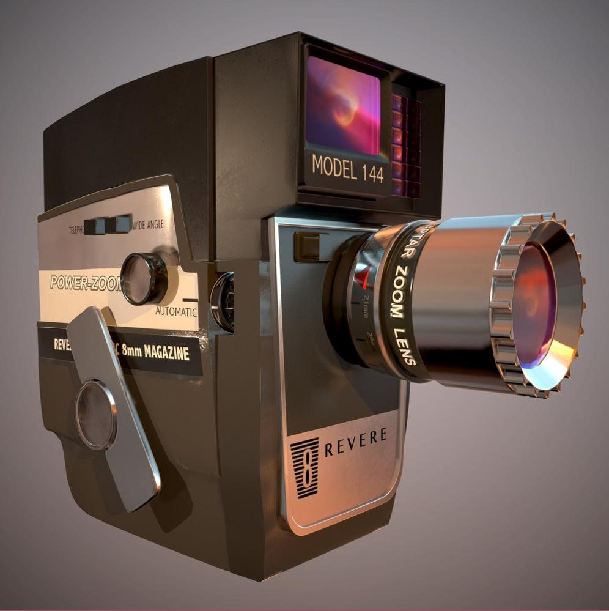
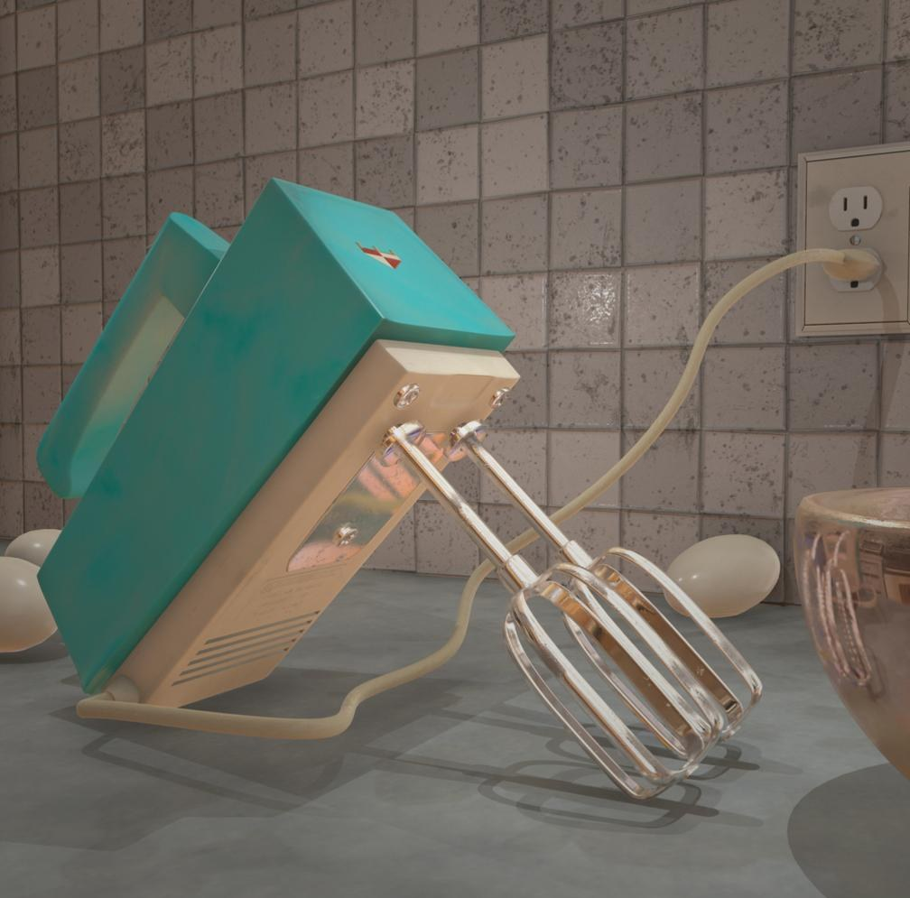
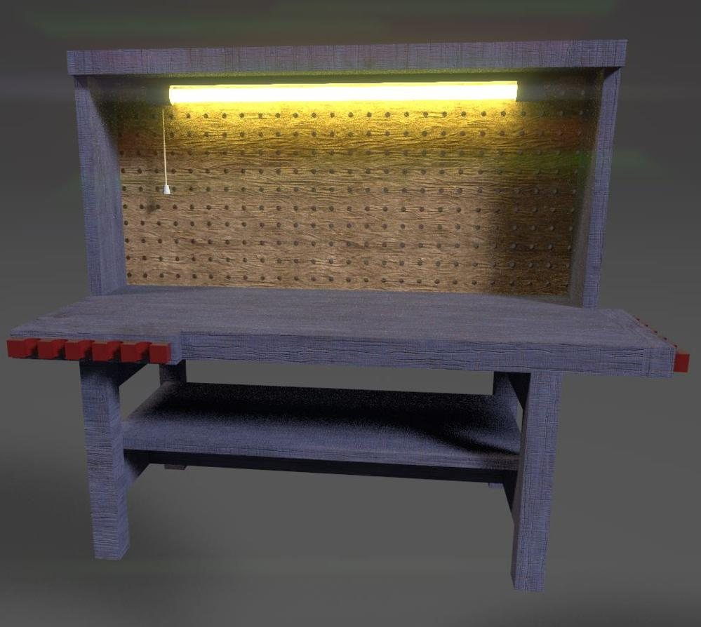
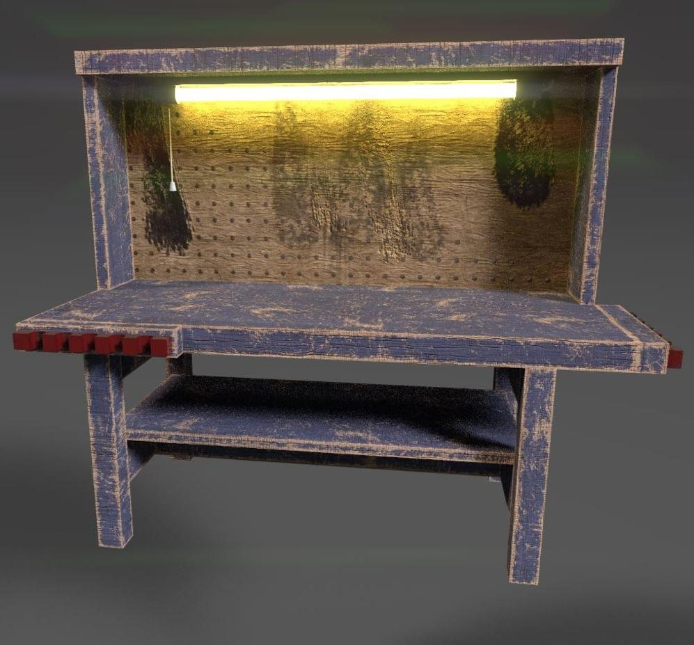
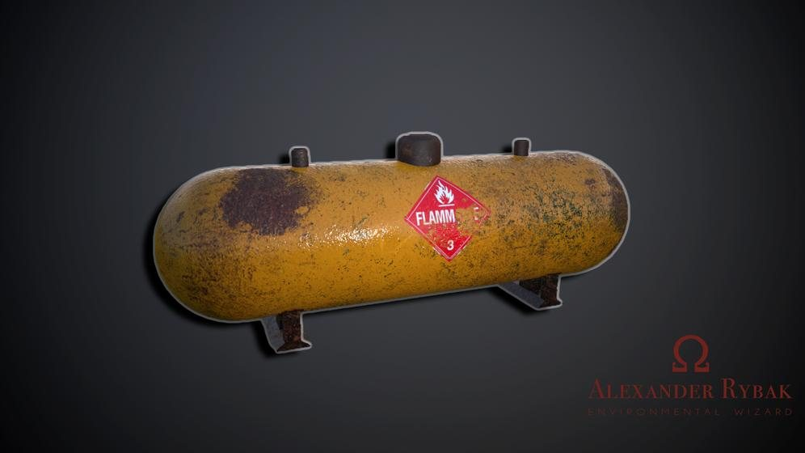
More older 3D work is on ArtStation →